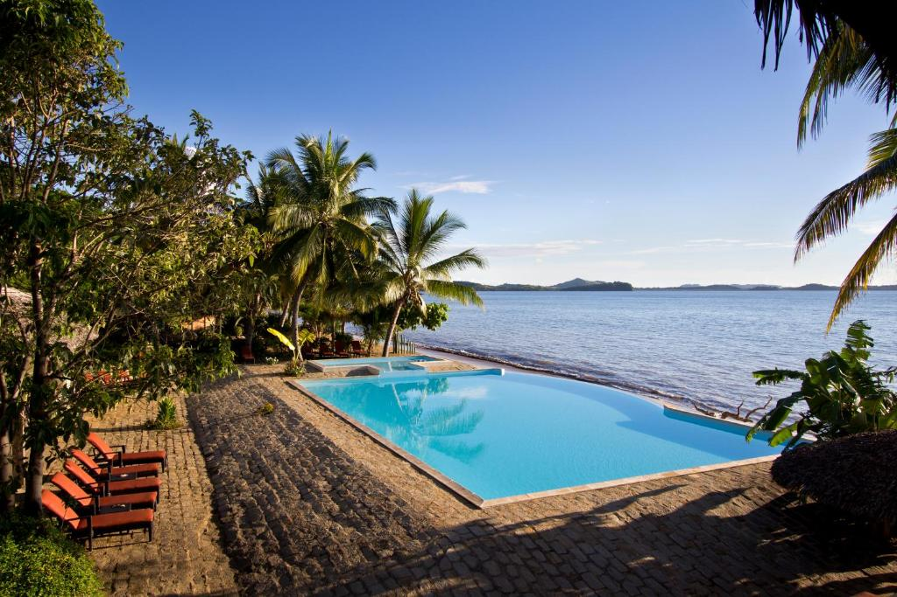
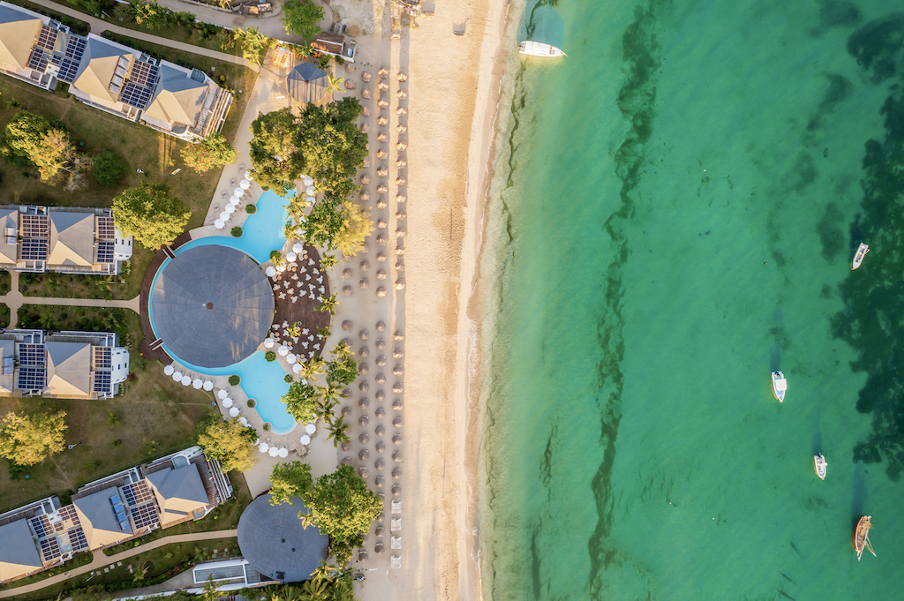
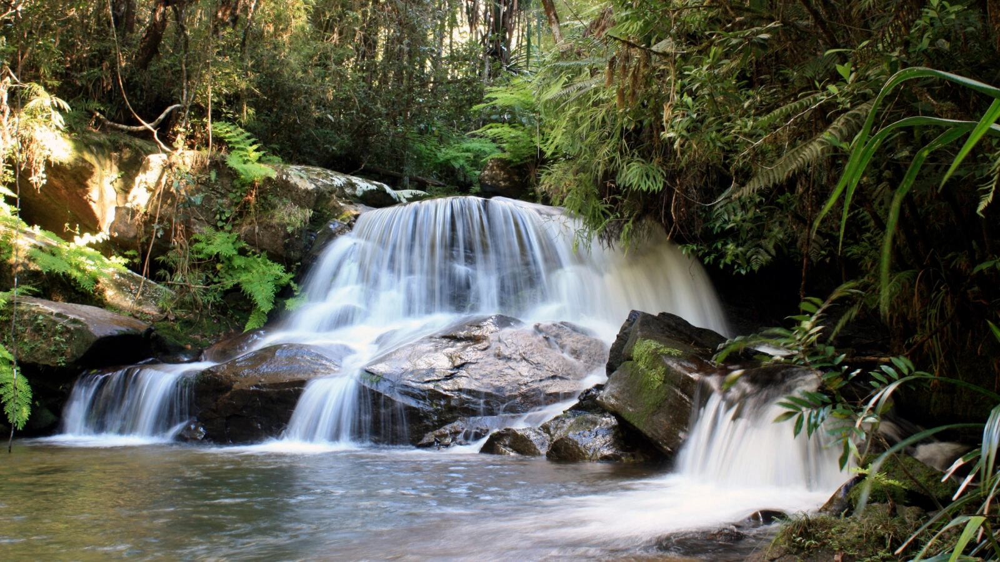

Welcome to the unique island, Madagascar!
Madagascar is wild, quiet, and deeply alive. Misty hills, calling lemurs, untouched beaches—it moves slowly, gently. The people are warm, the land ancient. It doesn’t try to impress you. It just does.
🌊Resorts in Madagascar!
-
Anjiamarango Beach Resort (Nosy Be)

Located on Nosy Be’s serene coastline, Anjiamarango Resort offers beachfront bungalows with stunning ocean views. Surrounded by nature, it’s perfect for relaxing or enjoying activities like snorkeling and kayaking. With warm hospitality and fresh local cuisine, it’s an ideal escape for travelers seeking peace and natural beauty.
-
Royal Andilana Resort & Spa (Nosy Be)

A newly opened 5-star luxury retreat by the Sound’s Hotels Group, Royal Andilana sits on the stunning Andilana Beach—often ranked among Nosy Be’s most beautiful resort Surrounded by tropical gardens rich with endemic flora and inhabited by chameleons and tortoises, the resort blends modern elegance with authentic Malagasy charm
-
Andasibe-Mantadia National Park

Situated about 140–150 km east of Antananarivo (a 3–4‑hour drive on RN 2), Andasibe–Mantadia is a breathtaking protected rainforest covering roughly 155 km² and divided into two zones: the easily accessed Analamazoatra (Andasibe or Périnet) Reserve and the wilder Mantadia National Park